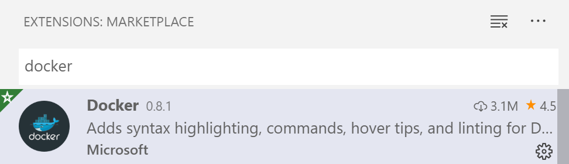
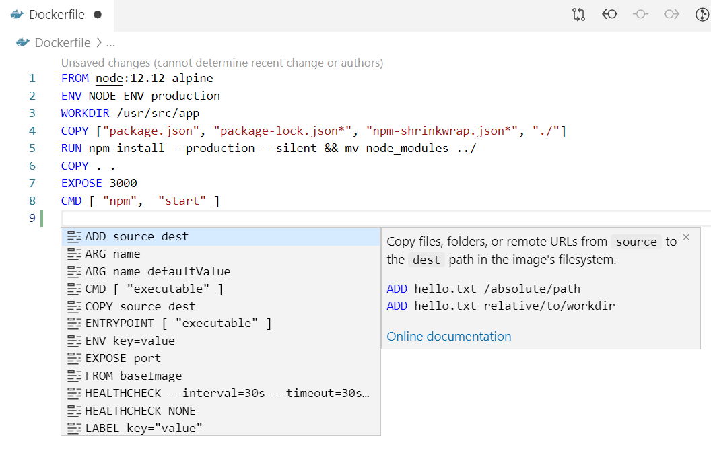
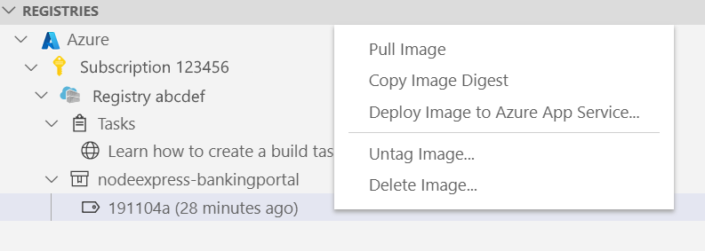
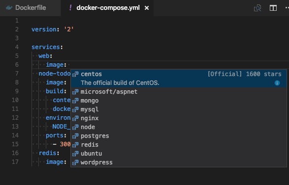

Working with containers
The Docker extension makes it easy to build, manage, and deploy containerized applications from Visual Studio Code.
This page provides an overview of the Docker extension capabilities; use the side menu to learn more about topics of interest. If you are just getting started with Docker development, try the Docker tutorial first to understand key Docker concepts.
Installation
Install Docker on your machine and add it to the system path.
On Linux, you should also enable Docker CLI for the non-root user account that will be used to run VS Code.
To install the extension, open the Extensions view (kb(workbench.view.extensions)), search for docker to filter results and select Docker extension authored by Microsoft.

Editing Docker files
You can get IntelliSense when editing your Dockerfile and docker-compose.yml files, with completions and syntax help for common commands.

In addition, you can use the Problems panel (kb(workbench.actions.view.problems)) to view common errors for Dockerfile and docker-compose.yml files.
Generating Docker files
You can add Docker files to your workspace by opening the Command Palette (kb(workbench.action.showCommands)) and using Docker: Add Docker Files to Workspace command. The command will generate Dockerfile and .dockerignore files and add them to your workspace. The command will also query you if you want the Docker Compose files added as well; this is optional.
The extension recognizes workspaces that use most popular development languages (C#, Node.js, Python, Ruby, Go, and Java) and customizes generated Docker files accordingly.
Docker Explorer
The Docker extension contributes a Docker Explorer view to VS Code. The Docker Explorer lets you examine and manage Docker assets: containers, images, volumes, networks, and container registries. If the Azure Account extension is installed, you can browse your Azure Container Registries as well.
The right-click menu provides access to commonly used commands for each type of asset.

You can rearrange the Docker Explorer panes by dragging them up or down with a mouse and use the context menu to hide or show them.

Docker commands
Many of the most common Docker commands are built right into the Command Palette:

You can run Docker commands to manage images, networks, volumes, image registries, and Docker Compose. In addition, the Docker: Prune System command will remove stopped containers, dangling images, and unused networks and volumes.
Using image registries
You can display the content and push/pull/delete images from Azure Container Registry, Docker Hub, GitLab, and more:

An image in an Azure Container Registry can be deployed to Azure App Service directly from VS Code; see Deploy images to Azure App Service page. For more information about how to authenticate to and work with registries see Using container registries page.
Debugging services running inside a container
You can debug services built using .NET (C#) and Node.js that are running inside a container. The extension offers custom tasks that help with launching a service under the debugger and with attaching the debugger to a running service instance. For more information see Debug container application and Extension Properties and Tasks pages.
Azure CLI integration
You can start Azure CLI (command-line interface) in a standalone, Linux-based container with Docker Images: Run Azure CLI command. This allows access to full Azure CLI command set in an isolated environment. See Get started with Azure CLI page for more information on available commands.
Docker Compose
Docker Compose lets you define and run multi-container applications with Docker. You can define what shape these containers look like with a file called docker-compose.yml.
Visual Studio Code's experience for authoring docker-compose.yml is also very rich, providing IntelliSense for valid Docker compose directives and it will query Docker Hub for metadata on public Docker images.
- Create a new file in your workspace called
docker-compose.yml - Define a new service called
web: - On the second line, bring up IntelliSense by pressing
kb(editor.action.triggerSuggest)to see a list of all valid compose directives.

- For the
imagedirective, you can presskb(editor.action.triggerSuggest)again and VS Code will query the Docker Hub index for public images.

VS Code will first show a list of popular images along with metadata such as the number of stars and description. If you continue typing, VS Code will query the Docker Hub index for matching images, including searching public profiles. For example, searching for 'Microsoft' will show you all the public Microsoft images.

Next steps
Read on to learn more about